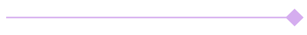

<!doctype html><html lang="ar" dir="rtl"><meta charset="utf-8"><style>@font-face{font-family:Thmanyah;src:url('../assets/b4b763db-ThmanyahDisplay-Bold.woff2');font-weight:700;font-display:block}@font-face{font-family:IBM;src:url('../assets/6f611412-IBM-Regular.ttf');font-weight:400;font-display:block}@font-face{font-family:IBM;src:url('../assets/b8363ab9-IBM-Medium.ttf');font-weight:500;font-display:block}
*{box-sizing:border-box}body{margin:0;background:#242027}.slide{position:relative;width:1080px;height:1350px;overflow:hidden;direction:rtl;margin:0 auto 30px;isolation:isolate}.text{position:absolute;z-index:4;line-height:1.22;overflow-wrap:normal}.heading{font-family:Thmanyah,serif;font-weight:700}.body{font-family:IBM,sans-serif;font-weight:400;line-height:1.6}.shape{position:absolute;z-index:1}.art{position:absolute;object-fit:contain;z-index:2}.logo{position:absolute;left:74px;top:53px;width:110px;height:62px;object-fit:contain;z-index:6}.photo{position:absolute;overflow:hidden;z-index:1;background:#11081a}.photo>img{width:100%;height:100%;object-fit:cover;filter:grayscale(1) contrast(1.05);object-position:50% 65%}.photo .tint{position:absolute;inset:0;pointer-events:none;background:#38104d;opacity:.08}.photo.edge .tint{opacity:1;background:linear-gradient(120deg,transparent 40%,rgba(56,16,77,.26) 100%)}.credit{position:absolute;top:12px;left:14px;font:15px Arial,sans-serif;color:#fff;background:rgba(8,7,11,.65);padding:5px 8px;direction:ltr}.decor{position:absolute;z-index:3;overflow:visible}

.component{pointer-events:none}.slide{margin-bottom:0}.text{overflow-wrap:normal}
.slide{margin:0;background-image:url('../assets/86f68220-pearl-stock.svg')!important;background-size:cover}</style><style>.heading{text-align:center!important}#P1 .body,#P4 .body{text-align:center!important}#P2>.heading{left:85px!important}#P3>.heading:first-child{left:75px!important}#P2 .component[src*="underline-pencil"]{left:395px!important}#C1-B>.text:not(.button){text-align:center!important;left:70px!important;width:940px!important}</style><section class="slide" id="P4" style="background:#FFFFFF"><div class="text heading" style="left:80px;top:157px;width:920px;font-size:76px;color:#08070B;text-align:right;">من منظور المستثمر تحديدًا:</div><div class="text heading" style="left:550px;top:729px;width:450px;font-size:66px;color:#08070B;text-align:right;">أصول مالية:</div><div class="text body" style="left:560px;top:838px;width:430px;font-size:36px;color:#08070B;text-align:right;">الأسهم، السندات، الصناديق الاستثمارية، العملات.</div><div class="text heading" style="left:65px;top:729px;width:446px;font-size:66px;color:#08070B;text-align:right;">أصول عينية:</div><div class="text body" style="left:75px;top:838px;width:426px;font-size:36px;color:#08070B;text-align:right;">العقارات، الذهب، السلع.</div><div class="text body" style="left:78px;top:1043px;width:924px;font-size:38px;color:#08070B;text-align:right;">التنويع بين استثمارات مختلفة قد يساعد على تقليل المخاطر، لكنه لا يمنع الخسارة.</div></section></html>